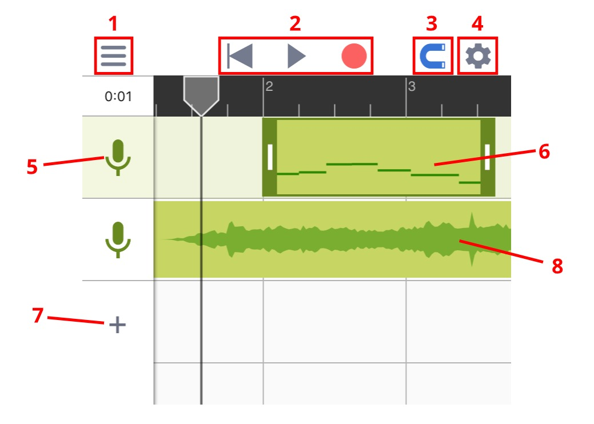

Quick Start Guide
MusicPutty is an advanced note-based pitch editor designed for iOS. The program's algorithm can analyze the pitch information of your vocal takes and give you the ability to edit them note by note. This may sound complicated, but fear not, there are only two main sections in MusicPutty that you need to be aware of. Those are the "Project Window" and the "Pitch Editing Window".
Project Window
Project window is where you can add tracks, record vocal clips and move those clips around across the timeline.

1
Menu: Contains buttons for loading, saving and exporting projects.
2
Cursor Reset, Play and Record.
3
Snap Toggle: Anything you drag will snap to grid once enabled.
4
Settings: Contains controls for metronome, tempo and time signature.
5
Track Icon: Click once to select a track, and twice to open its volume settings.
6
Vocal Clip: Any vocal takes you record will show up in the project window with a miniature view of all the notes inside. You can double-click on it to open the Pitch Editing Window."
7
Add Track: Click here to add an empty track or import a backing track.
8
Backing Track: Any backing tracks you have imported will show up as plain audio clips.
Pitch Editing Window
Pitch editing window is where you can view and edit all the notes that have been detected inside your vocal clips. To access this page, double-click on any vocal clips you have recorded in the project window.

1
Detected Note: the box shows the rough range of a note, and the line within the box shows the exact pitch at a point in time.
2
Main Tool: With this tool selected, you can drag a note up or down to change its pitch.
3
Note Separation Tool: You can use this tool to separate one note into multiple notes or merge multiple notes into one. (see more information in the screenshot below)

1
Position Handle: Use this handle to set the position where you want to separate the note. Once in place, you can either click on the handle or drag the handle upward to slice the note in half.
2
Merge Button (Left): Click here to merge the selected note with the note on its left.
3
Merge Button (Right): Click here to merge the selected note with the note on its right.